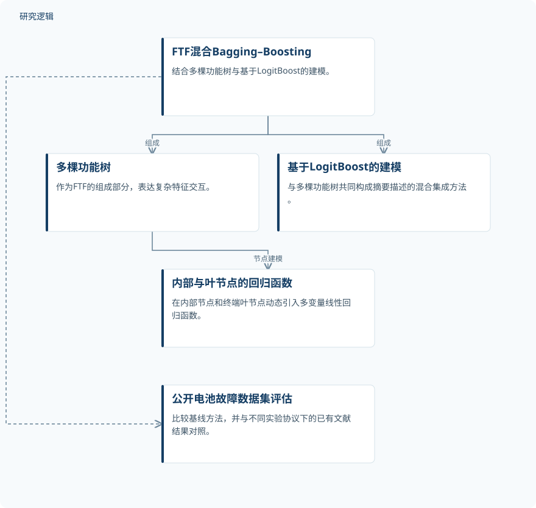

摘要解读
功能树森林：用于电动汽车电池故障诊断的袋装与提升混合集成学习方法
Functional Tree Forest: A Hybrid Bagging-Boosting Ensemble Machine Learning Approach for Battery Fault Diagnosis in Electric Vehicles
解读更新 2026-11-10 11:36 · 依据公开摘要整理，未核验全文细节
电动汽车电池故障诊断不仅需要准确识别故障，也需要让判断过程能够被理解。功能树森林（FTF）尝试将多变量建模与集成学习结合，值得关注的是：它如何表达特征间的复杂关系，以及摘要报告的准确率优势应如何解读。
文章目录
电池故障诊断：准确率与可解释性的双重要求
电池故障检测与诊断关系到电动汽车的安全、健康监测和运行表现。摘要指出，现有研究仍面临非线性特征交互带来的分类准确率限制，以及可解释性不足的问题。本文围绕这些困难提出新的模型结构，而不是只将任务表述为提高分类分数。
功能树森林如何结合树模型与LogitBoost
作者提出功能树森林（Functional Tree Forest，FTF），采用混合Bagging–Boosting集成方法，将多棵功能树与基于LogitBoost的建模结合，并强调保留模型的可解释性。摘要明确了这些组成部分，但没有展开具体训练流程及其配置。
与仅依赖轴对齐单变量属性划分的传统决策树不同，FTF在内部节点和终端叶节点动态引入多变量线性回归函数，以捕捉复杂的特征交互。这是摘要交代的关键结构差异；至于函数如何确定、节点如何选择，当前材料尚不足以说明。
依据摘要整理的FTF组成与评估示意


仅概括摘要明确描述的模型组成、节点函数与评估关系，不表示具体训练顺序，也不是论文原图。
下载 SVG图示关系说明
实线表示相邻阶段的信息流，虚线表示跨阶段联系或反馈。
FTF混合Bagging–Boosting → 多棵功能树：组成；FTF混合Bagging–Boosting → 基于LogitBoost的建模：组成；多棵功能树 → 内部与叶节点的回归函数：节点建模；FTF混合Bagging–Boosting → 公开电池故障数据集评估：评估
基线比较领先，文献比较需保留协议差异
研究在五个公开电动汽车电池故障数据集上进行了评估。摘要报告，与13种基线机器学习方法比较时，FTF取得了数值上最高的准确率；基线涵盖线性模型、传统树分类器、集成方法和网络类结构。摘要没有列出具体准确率及其差值，因此不能进一步量化优势。
作者还直接引用使用相同数据集的先进研究所报告的结果进行比较，称FTF具有竞争力，但性能差异的幅度随数据集而变化。这里需要区分基线比较与跨文献比较：后者涉及不同实验协议，不能直接解读为统一条件下的全面领先。
摘要尚不能回答样本、比较与验证细节
仅凭摘要，无法判断各数据集的样本规模、故障类别分布、数据划分方式，以及基线调参与统计检验是否充分；也无法确认真实车辆运行场景、跨工况泛化和在线诊断的验证范围。摘要虽强调可解释性，但未说明其展示或评价方式。这些都是当前资料的边界，并不意味着论文没有开展相关工作。
阅读启发：把结构解释与比较条件放在一起看
阅读启发：对于AI智能运维，值得进一步阅读的是，多变量节点函数如何帮助理解故障判别，以及这种解释是否对应具体诊断依据。同时，应关注各数据集上的性能差异与实验协议，避免把分类准确率优势直接等同于已验证的车辆安全收益或部署能力。
以上为本站阅读启发与建议，不是论文已验证的结论。